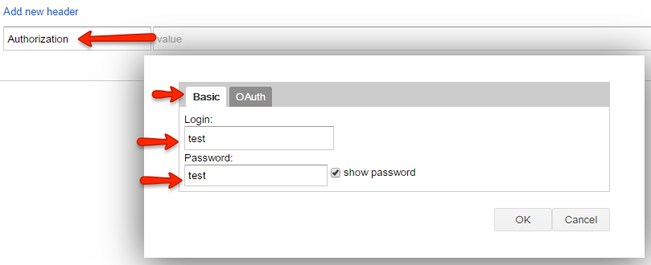

Basic Authentication con WebApi 2.0
Introducción
Hola a todos.
En ocasiones pasadas estuvimos estudiando el manejo de los servicios HTTP por medio de WebApi, en los ejemplo que hemos realizado no se han involucrado conceptos de seguridad que permitan de alguna forma proteger la información o los métodos que son expuestos por medio nuestra API.
Muy bien en este post y algunos adicionales voy a mostrar como se pueden implementar diferentes metodologías de autenticación, seguridad y protección de acceso a nuestras APIs, algunos de estos métodos serán más sofisticado o elaborados que otros, por lo tanto, deben ser evaluados cuidadosamente al momento de elegir nuestro protocolo de seguridad para el desarrollo de servicios HTTP.
La primera técnica que evaluaremos en este artículo es la autenticación básica (Basic Authentication), este método permite que nuestras APIs solamente sean accedidas por usuarios que cuenten con credenciales válidas, las cuales son suministradas en el momento de realizar las peticiones. Al tratarse de autenticación básica debemos tener en cuenta que se tiene que implementar una lógica dentro de nuestra API, que valide que las credenciales presentadas en la solicitud son válidas, con lo cual se otorga el acceso a la API.
Descripción
Para empezar crearemos un nuevo proyecto Web el cual trabajaremos solamente con la plantilla de WebApi:

Lo siguiente es crear un controlador simple que nos devuelva cualquier resultado, lo importante es poder validar posteriormente que lo podamos acceder al autenticarnos:
using System; using System.Collections.Generic; using System.Linq; using System.Net; using System.Net.Http; using System.Web.Http; namespace WebApiAuthentication.Controllers { public class ValuesController : ApiController { [HttpGet] public IHttpActionResult Get() { return Ok("Hola "); } } }
using System; using System.Collections.Generic; using System.Linq; using System.Net; using System.Net.Http; using System.Web.Http; namespace WebApiAuthentication.Controllers { public class ValuesController : ApiController { [HttpGet] public IHttpActionResult Get() { return Ok("Hola "); } } }
Hasta este punto tenemos un controlador de WebApi que nos devuelve el texto “Hola ” al consultarlo por el método GET en la dirección /Api/Values

Lo que haremos a continuación es incluir la lógica para la autenticación, para esto debemos agregar una clase módulo en la cual definiremos el comportamiento de la interface IHttpModule, con la cual interceptaremos las solicitudes y realizaremos la correspondiente validación de credenciales.
using System; using System.Collections.Generic; using System.Linq; using System.Net.Http.Headers; using System.Security.Principal; using System.Text; using System.Threading; using System.Web; namespace WebApiAuthentication.Modules { public class BasicAuthHttpModule : IHttpModule { private const string Realm = "WebAPI Authentication"; public void Init(HttpApplication context) { // Se registran los manejadores de los eventos context.AuthenticateRequest += OnApplicationAuthenticateRequest; context.EndRequest += OnApplicationEndRequest; } private static void SetPrincipal(IPrincipal principal) { Thread.CurrentPrincipal = principal; if (HttpContext.Current != null) { HttpContext.Current.User = principal; } } private static bool AuthenticateUser(string credentials) { var encoding = Encoding.GetEncoding("iso-8859-1"); credentials = encoding.GetString(Convert.FromBase64String(credentials)); var credentialsArray = credentials.Split(':'); var username = credentialsArray[0]; var password = credentialsArray[1]; /* Aquí se validan las credenciales o el token enviado en el encabezado de la solicitud */ if (!(username == "test" && password == "test")) { return false; } var identity = new GenericIdentity(username); SetPrincipal(new GenericPrincipal(identity, null)); return true; } private static void OnApplicationAuthenticateRequest(object sender, EventArgs e) { var request = HttpContext.Current.Request; var authHeader = request.Headers["Authorization"]; if (authHeader != null) { var authHeaderVal = AuthenticationHeaderValue.Parse(authHeader); // Se valida si el esquema de autenticación es básico (Basic Authentication) if (authHeaderVal.Scheme.Equals("basic", StringComparison.OrdinalIgnoreCase) && authHeaderVal.Parameter != null) { AuthenticateUser(authHeaderVal.Parameter); } } } // Si la solicitud no fue aprobada, se agrega el encabezado WWW-Authenticate a la respuesta private static void OnApplicationEndRequest(object sender, EventArgs e) { var response = HttpContext.Current.Response; if (response.StatusCode == 401) { response.Headers.Add("WWW-Authenticate", string.Format("Basic realm=\"{0}\"", Realm)); } } public void Dispose() { } } }
using System; using System.Collections.Generic; using System.Linq; using System.Net.Http.Headers; using System.Security.Principal; using System.Text; using System.Threading; using System.Web; namespace WebApiAuthentication.Modules { public class BasicAuthHttpModule : IHttpModule { private const string Realm = "WebAPI Authentication"; public void Init(HttpApplication context) { // Se registran los manejadores de los eventos context.AuthenticateRequest += OnApplicationAuthenticateRequest; context.EndRequest += OnApplicationEndRequest; } private static void SetPrincipal(IPrincipal principal) { Thread.CurrentPrincipal = principal; if (HttpContext.Current != null) { HttpContext.Current.User = principal; } } private static bool AuthenticateUser(string credentials) { var encoding = Encoding.GetEncoding("iso-8859-1"); credentials = encoding.GetString(Convert.FromBase64String(credentials)); var credentialsArray = credentials.Split(':'); var username = credentialsArray[0]; var password = credentialsArray[1]; /* Aquí se validan las credenciales o el token enviado en el encabezado de la solicitud */ if (!(username == "test" && password == "test")) { return false; } var identity = new GenericIdentity(username); SetPrincipal(new GenericPrincipal(identity, null)); return true; } private static void OnApplicationAuthenticateRequest(object sender, EventArgs e) { var request = HttpContext.Current.Request; var authHeader = request.Headers["Authorization"]; if (authHeader != null) { var authHeaderVal = AuthenticationHeaderValue.Parse(authHeader); // Se valida si el esquema de autenticación es básico (Basic Authentication) if (authHeaderVal.Scheme.Equals("basic", StringComparison.OrdinalIgnoreCase) && authHeaderVal.Parameter != null) { AuthenticateUser(authHeaderVal.Parameter); } } } // Si la solicitud no fue aprobada, se agrega el encabezado WWW-Authenticate a la respuesta private static void OnApplicationEndRequest(object sender, EventArgs e) { var response = HttpContext.Current.Response; if (response.StatusCode == 401) { response.Headers.Add("WWW-Authenticate", string.Format("Basic realm=\"{0}\"", Realm)); } } public void Dispose() { } } }
Esta clase debemos agregarla al flujo de nuestro archivo de configuración Web.Config en la sección “modules” el cual se ubica en la etiqueta “<system.webServer>”, tener especial cuidado con el NameSpace que se utilice en la propiedad “Type”:
<system.webServer>
<modules>
<add name="BasicAuthHttpModule" type="WebApiAuthentication.Modules.BasicAuthHttpModule" />
</modules>
</system.webServer>
<system.webServer> <modules> <add name="BasicAuthHttpModule" type="WebApiAuthentication.Modules.BasicAuthHttpModule" /> </modules> </system.webServer>
using System; using System.Collections.Generic; using System.Linq; using System.Net; using System.Net.Http; using System.Web.Http; namespace WebApiAuthentication.Controllers { [Authorize] public class ValuesController : ApiController { [HttpGet] public IHttpActionResult Get() { return Ok("Hola "); } } }
using System; using System.Collections.Generic; using System.Linq; using System.Net; using System.Net.Http; using System.Web.Http; namespace WebApiAuthentication.Controllers { [Authorize] public class ValuesController : ApiController { [HttpGet] public IHttpActionResult Get() { return Ok("Hola "); } } }
Muy bien tenemos nuestro ejemplo listo, al iniciar el proyecto e intentar consumir nuestra API, el navegador solicitará credenciales autenticación:

En este punto podemos dar las credenciales de acceso, sin embargo, si deseamos que siempre se acceda a la API sin digitar las credenciales, debemos agregar en el encabezado de la solicitud la propiedad “Authorization”, en el cual construiremos la cadena con el usuario y clave correspondientes:

Al realizar nuevamente la solicitud, veremos que nuestra API devuelve sin inconvenientes los resultados del método:

- ValuesController.cs - Controlador WebApi con el adorno de autenticación.
- BasicAuthHttpModule.cs - Módulo encargado de interceptar las solicitudes y validar el acceso a los métodos de la API.
Más Información
Para más información pueden contactarme por medio de la plataforma, mis redes sociales o mi blog http://www.yovento.com